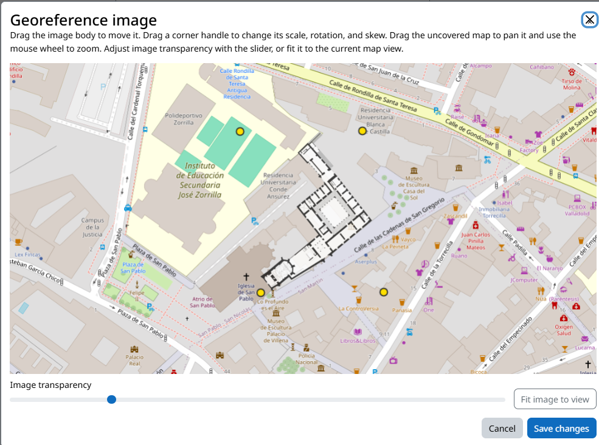

Choose a map
The standard editor works with OpenStreetMap and activity-defined map layers. Depending on your site configuration, you can use tiled XYZ or WMS services, uploaded georeferenced images and overlays. A custom image can support a museum floor plan or a non-geographical learning game; choose the setting that disables geographic tools when the image has no Earth coordinates.

Add a custom source
In the activity settings, choose both how the layer appears and which service or image provides it. The screenshot shows the source controls before the detailed setup steps.

XYZ and TMS tile services
Select Tiled XYZ image and enter the tile URL template with {z}, {x} and {y}. For TMS providers that count rows from the bottom, use {-y}. Give the layer a name and check the provider’s attribution, licence and request limits.
WMS services
Select WMS service, enter the service endpoint and add its layer name in LAYERS under the extra WMS parameters. Include any other parameters required by the service, then verify that the selected layer and its projection display correctly in the editor.
ArcGIS REST tile services
Select the experimental ArcGIS REST Tile service option and enter the service’s MapServer URL. Check that the service exposes tiled imagery and test its coverage and attribution in the editor.
Uploaded georeferenced image
Select Uploaded image, upload a JPG, PNG or SVG, and open Georeference image. Drag the image to position it, drag its corner handles to set scale, rotation and skew, and use Shift while dragging to pan the map beneath it. Set transparency or fit the image to the current view, then save the placement.

Choose how the layer appears
- Additional base map: adds the custom map as a selectable map background alongside the standard maps.
- Overlay: draws the custom layer above the standard map; transparent images can show the streets or satellite map beneath them.
- Only base map: uses the custom layer as the sole map background.
- Non-geographic image: displays an image without Earth coordinates as the map and disables geographic tools.
After configuring a source, save the activity, reopen the editor and confirm the layer’s coverage and placement before drawing stages.
Draw stages on the map
Select a road and stage, then choose drawing mode. A point is useful for a single object; a polygon gives a tolerance area around a location. For outdoor GPS use, make polygons large enough for typical phone accuracy and environmental drift. In editing mode, drag vertices or add a vertex on a segment; save the geometry and inspect the validation feedback.
Hints and visible areas
Map hints can reveal direction, distance or stage geometry according to your activity settings. For out-of-sequence discovery, eligible incomplete stages contribute to hints, and spatial guidance targets the nearest eligible stage. Test the map from the learner view to make sure a clue does not reveal more than intended.
Map checklist
- Every required stage has at least one geometry.
- Roads contain at least two geometric stages.
- Base imagery loads at the planned play area and zoom level.
- GPS tolerance matches the environment; QR is available where GPS is unreliable.
- Custom imagery is correctly positioned and legally reusable.